Lecture 6: Networks, Sentiment and Asset Classes
Daniel Traian PELE
Bucharest University of Economic Studies
IDA Institute Digital Assets
Blockchain Research Center
Master Blockchain for Business (MBB), FABIZ
25 November 2026
Lecture 6: Networks, Sentiment and Asset Classes
Lecture 6: Networks, Sentiment and Asset Classes
Daniel Traian PELE
Bucharest University of Economic Studies
IDA Institute Digital Assets
Blockchain Research Center
Master Blockchain for Business (MBB), FABIZ
25 November 2026
“Using a generalized vector autoregressive framework in which forecast-error variance decompositions are invariant to the variable ordering, we propose measures of both the total and directional volatility spillovers.” — Diebold & Yilmaz (2012)
The lecture asks four related questions. How are crypto assets linked to each other? Are they an asset class of their own? Do protocol events move their prices? And does the sentiment of social-media posts carry information about the market?
The route follows these questions. The first section treats the market as a network: coins are the nodes and their co-movements the links, measured by correlations, a minimum spanning tree and the spillovers of Diebold & Yilmaz (2012). The second section describes each asset by the statistical features of its returns and asks whether crypto assets form a separate group, with a factor analysis and a classifier. The third runs an event study around 13 upgrades of the Ethereum protocol. The fourth describes the BitMood sentiment index, built from Facebook posts, and the standard a trading back-test must meet before its results can be trusted.
The data are daily prices from EOD Historical Data (EODHD) of 19 coins and 14 traditional assets, January 2021 – October 2026, and the dates of the Ethereum upgrades from 2019 to 2025.
In brief
The main reading on asset classes is the article Are cryptos becoming alternative assets? by Pele, Wesselhöfft, Härdle, Kolossiatis & Yatracos (2023) in the European Journal of Finance. The network tools come from Mantegna (1999), who turned correlations into distances and trees, and from Diebold & Yilmaz (2012), who defined spillover indices from a vector autoregression. The herding test of the Appendix goes back to Christie & Huang (1995) and Chang, Cheng & Khorana (2000).
For event studies, the standard survey is MacKinlay (1997) in the Journal of Economic Literature; the study of Ethereum upgrades by Lin, Găman, Wang & Pele (2026) is a working paper. The sentiment index is described in BitMood: AI analysis of Bitcoin trends via Facebook emotions by Conda, Găman, Bâg, Mazurencu-Marinescu-Pele, Pele & Härdle (2026) in Digital Finance. Five video units of the Quantinar platform accompany the lecture. The methods are available in Python: `statsmodels` estimates vector autoregressions, `networkx` builds networks and spanning trees, and `scikit-learn` computes principal components and clusters; the notebook of Lecture 6 applies them to the data of the lecture.
In brief
statsmodels (vector autoregression, VAR), networkx (networks, spanning trees), scikit-learn (principal components, clustering)Using a generalized vector autoregressive framework in which forecast-error variance decompositions are invariant to the variable ordering, we propose measures of both the total and directional volatility spillovers.
Lectures 2 and 3 studied one coin at a time: its returns, its volatility and its tail risk. An investor, however, rarely holds a single coin, and a risk manager must know what happens to the whole book when one coin falls. Crypto assets do not move alone. The first question of this lecture is therefore how strongly the coins are linked, which coins sit at the centre of the market and which at its edge, and how these links change through time.
The second question is whether crypto assets form an asset class of their own, or whether some of them, Bitcoin in particular, now behave like stocks, bonds or currencies. The answer matters for portfolio construction and for regulation, because an asset class is treated as one block in an allocation. The third and fourth questions concern information: do announced protocol events, here the upgrades of Ethereum, move the price of Ether, and does the mood of social-media posts help to forecast the market?
The data are daily closing prices of 19 coins and 14 traditional assets (equities, Treasuries, gold, silver, oil and foreign-exchange rates) from January 2021 to October 2026, from the data provider EOD Historical Data (EODHD), the dates of 13 Ethereum upgrades from 2019 to 2025, and published results from two recent studies on upgrades and on Facebook sentiment.
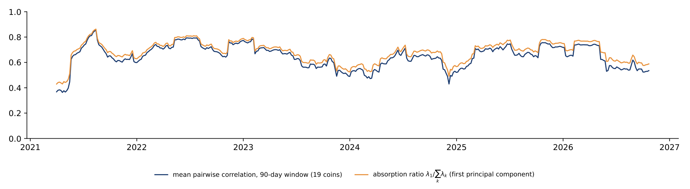
The Appendix holds optional material on herding and on price indices for digital art; it is not examined.
A network has nodes and links. Here the nodes are coins and the links describe how their returns move together. The section first separates four different meanings of a "link", then builds a tree from correlations, measures how much of the market is driven by one common factor, and finally measures which coins transmit shocks to the others.
The word "link" is used for several different measures, and they answer different questions. A tail link, from Lecture 5, means that coin \(j\) has a nonzero slope in the 5% Quantile Lasso regression of coin \(i\): it concerns the lower tail of the distribution only and has a direction, from \(j\) to \(i\). A correlation \(\rho_{ij}\) means that the daily returns of \(i\) and \(j\) move together on the same day; it uses the whole distribution and has no direction.
An edge of the minimum spanning tree (MST) is a correlation that belongs to the \(N-1\) strongest links needed to connect all \(N\) coins; it also has no direction. A spillover \(\tilde\theta_{ij}\) in the sense of Diebold and Yilmaz is the share of the forecast-error variance of coin \(i\) over the next \(H\) days that is due to shocks in coin \(j\); it has a direction, from \(j\) to \(i\).
In the rest of the lecture, "link" means a correlation or an MST edge, and "spillover" means a Diebold–Yilmaz share. None of the four measures shows that one coin causes another to move. Each describes a statistical co-movement, which can come from a common driver, such as news that affects the whole market.
In brief
| measure | a link \(i\)–\(j\) means | direction, part of the distribution |
|---|---|---|
| tail link (Lecture 5) | coin \(j\) has a nonzero slope in the 5% Quantile Lasso of coin \(i\) | \(j \rightarrow i\); lower tail only |
| correlation \(\rho_{ij}\) | returns move together on the same day | none (symmetric); whole distribution |
| MST edge | \(\rho_{ij}\) is among the \(N-1\) strongest links that connect all coins | none; whole distribution |
| spillover \(\tilde\theta_{ij}\) (Diebold–Yilmaz) | share of \(i\)'s forecast-error variance due to shocks in \(j\) | \(j \rightarrow i\); variance over \(H\) days |
The network is built from the daily log returns of 19 coins over 2,121 days, January 2021 – October 2026. The Pearson correlation \(\rho_{ij}\) between two return series measures their linear co-movement, from \(-1\) to 1. It is not a distance: a higher correlation means two coins are closer. Mantegna (1999) therefore transforms it into a correlation distance,
which is a proper distance (a metric): it is 0 when \(\rho = 1\), \(\sqrt 2 \approx 1.41\) when \(\rho = 0\) and 2 when \(\rho = -1\).
With 19 coins there are 171 pairs, too many links to read. The minimum spanning tree keeps only \(N - 1 = 18\) of them: the set of edges that connects all coins, contains no loop, and has the smallest total distance,
The tree keeps the strongest links and removes the rest. A coin with many edges in the tree, that is with a high degree, is a hub: many other coins are attached to the market through it.
Two examples show the scale. Bitcoin (BTC) and Ether (ETH) have \(\rho = 0.823\), so formula (6.1) gives \(d = \sqrt{2 \times 0.177} = 0.595\), a short distance. Dogecoin (DOGE) and Tron (TRX) have \(\rho = 0.349\), the lowest correlation in the sample, and \(d = 1.141\), close to the distance of two uncorrelated coins.
In brief
A correlation coefficient is easier to judge when one sees the data behind it. Each dot in the two panels is one day between January 2021 and October 2026: its horizontal position is the daily log return of Bitcoin, its vertical position the return of a second coin. The left panel uses Ether, the coin most correlated with Bitcoin; the right panel uses Tron (TRX), the least correlated. The red line is the least-squares line of the second coin's return on Bitcoin's.
For Bitcoin and Ether the correlation is \(\rho = 0.82\) and the cloud is narrow. The slope of 1.11 means that Ether moves on average by 1.11% for each 1% move of Bitcoin, so Ether amplifies the market's moves. Both coins move in the same direction on 82% of the days. For Bitcoin and Tron, \(\rho = 0.52\): the cloud is wide, the slope is 0.67, and the two coins move in the same direction on 69% of the days. The square of the correlation is the share of the second coin's daily variance that a straight line in Bitcoin's return explains: 0.68 for Ether, but only 0.27 for Tron.
The two correlations become the distances of (6.1): \(d = \sqrt{2 \times 0.177} = 0.60\) for Bitcoin and Ether and \(d = \sqrt{2 \times 0.479} = 0.98\) for Bitcoin and Tron. The minimum spanning tree is built from the shortest of these distances, so a pair like Bitcoin and Ether is a natural edge, while Tron is attached to the tree through whichever coin is closest to it.
In brief
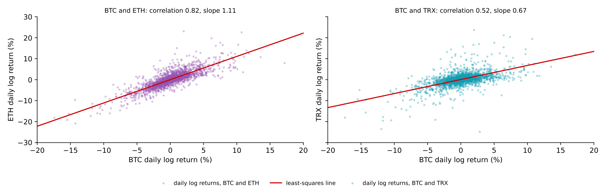
The left panel is a heat map of the 19 × 19 correlation matrix of daily log returns, January 2021 – October 2026: darker red means a higher correlation. Almost the whole matrix is red. The mean pairwise correlation is 0.60, the lowest is 0.35 (DOGE–TRX), and the correlation with Bitcoin ranges from 0.52 for Tron to 0.82 for Ether. Lighter rows and columns, such as those of DOGE, TRX and Monero (XMR), mark the coins that move most independently of the others.
The right panel draws the minimum spanning tree. Each circle is a coin, its size grows with its degree, and Bitcoin and Ether are in red. The tree has two hubs with six edges each. Ether is linked to Bitcoin, BNB, Solana (SOL), Litecoin (LTC), Chainlink (LINK) and Ethereum Classic (ETC); Polkadot (DOT) is linked to Cardano (ADA), Cosmos (ATOM), Filecoin (FIL), Algorand (ALGO), Tron and Chainlink. Chainlink connects the two hubs.
Bitcoin itself has only two edges, to Ether and to Monero. A low degree does not make a coin unimportant: Bitcoin is highly correlated with every coin, but the tree keeps only the single strongest path to each coin, and for most coins that path runs through Ether or Polkadot. The spillover table below gives a different view of Bitcoin's role.
In brief
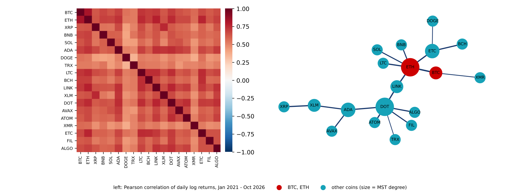
A tree shows the structure of the links; a single number for their overall strength comes from principal components. The principal components of the correlation matrix of \(N\) coins are uncorrelated portfolios of the standardised returns. The eigenvalue \(\lambda_k\) is the variance of the \(k\)-th component; the eigenvalues are ordered, \(\lambda_1 \geq \lambda_2 \geq \dots \geq \lambda_N \geq 0\), and add up to \(N\), the total variance of \(N\) standardised series.
The absorption ratio (AR) is the share of the total variance taken by the first component:
It lies between \(1/N\), when the coins are uncorrelated and no component dominates, and 1, when one factor drives all of them.
A simple case shows how the ratio depends on the correlations. If every pair of the \(N = 19\) coins has the same correlation \(\rho\), the first eigenvalue is \(\lambda_1 = 1 + (N-1)\rho\) and the other 18 eigenvalues equal \(1 - \rho\). With \(\rho = 0.60\), close to the mean correlation of the sample, \(\lambda_1 = 1 + 18 \times 0.60 = 11.8\) and \(\mathrm{AR} = 11.8/19 = 0.62\). With \(\rho = 0.85\), \(\lambda_1 = 16.3\) and \(\mathrm{AR} = 0.86\). With \(\rho = 0\), \(\mathrm{AR} = 1/19 = 0.05\): there is no common factor.
A high absorption ratio means that one common factor, in practice the movement of the whole crypto market, drives most coins. Spreading money over many coins then reduces risk only a little, because most of the variance is common to all of them.
In brief
The worked example assumed that all pairs have the same correlation. The left panel checks this idea on the actual correlation matrix of the 19 coins, January 2021 – October 2026. The dark blue bars are its 19 eigenvalues, from the largest to the smallest; the orange dots are the eigenvalues of the equicorrelation matrix with the same mean correlation, \(\bar\rho = 0.60\).
The first eigenvalue is \(\lambda_1 = 11.84\); the second is only 0.79, and no other eigenvalue exceeds 1. The equicorrelation formula predicts \(\lambda_1 = 1 + 18 \times 0.60 = 11.74\) and \(1 - 0.60 = 0.40\) for each of the others, close to the actual values. The absorption ratio of the full sample is \(11.84/19 = 0.62\): one common factor carries almost two thirds of the variance of 19 standardised return series, and the remaining 18 components share the rest.
The right panel repeats the calculation for each calendar year. The absorption ratio was lowest in 2023 (0.59) and highest in 2022 (0.74), the year of the Terra and FTX collapses, when the whole market fell together. In every year the simple formula \((1 + 18\bar\rho)/19\), which uses only the mean correlation of the year, is within 0.021 of the absorption ratio. For this market the mean pairwise correlation is therefore a good summary of how strong the common factor is.
In brief
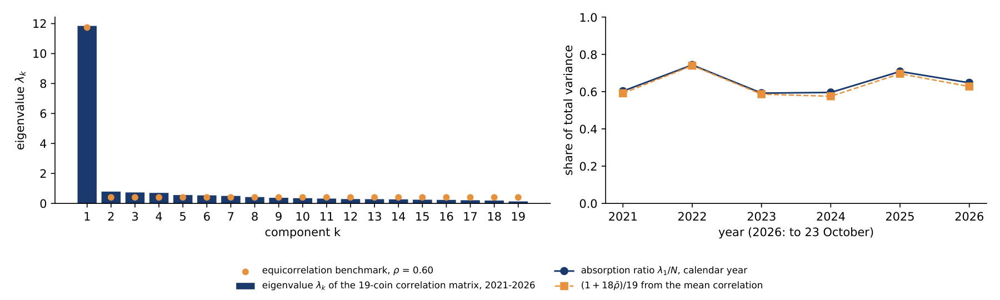
The chart computes both measures on rolling windows: for each date, the correlation matrix of the previous 90 days of daily log returns of the 19 coins gives the mean pairwise correlation (dark blue) and the absorption ratio \(\mathrm{AR}_t\) (orange). The last window ends on 22 October 2026.
The mean correlation was lowest, 0.36, in April 2021 and highest, 0.85, in mid-August 2021, after the market crash of May 2021, when all coins fell together. In the last window it was 0.54. The absorption ratio averaged 0.68 over all windows and was 0.59 in the last one. The two lines move almost in parallel, as the worked example suggests: when the average correlation rises, so does the share of the first component.
For an investor the practical reading is simple. When one factor explains around 80% of the variance, as in parts of 2021 and 2022, holding many coins instead of one adds very little diversification; the benefit is largest in the periods when the lines are low.
In brief
Correlations are symmetric and describe the same day. Diebold & Yilmaz (2012) measure instead how shocks to one coin affect the future returns of the others. The starting point is a vector autoregression (VAR) of order \(p\): each of the \(N\) return series is regressed on \(p\) past values of all series,
where \(\mathbf r_t\) is the vector of returns on day \(t\), \(\Phi_l\) are \(N \times N\) coefficient matrices and \(\boldsymbol\varepsilon_t\) are the shocks, with covariance matrix \(\Sigma\). Rewritten as a moving average (MA), \(\mathbf r_t = \sum_{h \geq 0} A_h \boldsymbol\varepsilon_{t-h}\), the model shows how a shock today feeds into the returns of the next days.
The forecast-error variance decomposition splits the uncertainty of an \(H\)-day forecast of coin \(i\) into parts due to the shocks of each coin \(j\). The generalised version of Pesaran and Shin, used by Diebold and Yilmaz, does not depend on the order in which the variables enter the model:
Here \(\mathbf e_i\) is a vector with 1 in position \(i\) and 0 elsewhere, and \(\sigma_{jj}\) is the variance of the shocks to coin \(j\). The raw shares \(\theta_{ij}\) need not add up to 1 across \(j\), so each row is normalised: \(\tilde\theta_{ij}\) is the share of coin \(i\)'s forecast-error variance due to shocks in coin \(j\).
Four indices summarise the table of shares, in percent:
The total spillover index \(S\) is the average share of forecast-error variance that comes from other coins. \(\mathrm{TO}_j\) is what coin \(j\) sends to all others, \(\mathrm{FROM}_i\) what coin \(i\) receives from all others, and \(\mathrm{NET}_i\) the difference: a positive NET marks a net transmitter of shocks, a negative NET a net receiver.
In brief
The table applies formulas (6.4) – (6.6) to eight large coins: Bitcoin, Ether, XRP, BNB, Solana, Cardano, Dogecoin and Litecoin, with daily log returns from 2021 to 2026. The lag order \(p = 5\) is chosen by the Akaike information criterion (AIC), a rule that balances the fit of the model against the number of its parameters, and the forecast horizon is \(H = 10\) days.
Each row is a receiver of shocks and each column a source. A cell is read as a percentage: in row BTC, column ETH, the value 16.0 means that 16% of the 10-day forecast-error variance of Bitcoin is due to shocks in Ether. The diagonal is the part due to a coin's own shocks; for Bitcoin it is 23.3%. The FROM column adds up each row without the diagonal, and the TO row adds up each column without the diagonal.
The total spillover index is the mean of the FROM column, \(S = 72.9\%\): on average almost three quarters of a coin's forecast uncertainty comes from the other seven coins, a highly connected system. The NET row shows who transmits. Ether has \(\mathrm{NET} = 93.2 - 77.5 = +15.7\) and Bitcoin \(+11.0\), so they are the largest net transmitters; Cardano and Litecoin are small net transmitters (\(+5.0\) each).
Dogecoin is the largest net receiver, with \(\mathrm{NET} = -18.6\). This is not because it receives much: its FROM value, 63.6, is the lowest in the table, and 36.4% of its variance comes from its own shocks. It is a net receiver because it sends far less, \(\mathrm{TO} = 45.0\). This answers part of the question raised by the tree: Bitcoin has few edges in the MST but is the second-largest transmitter of shocks.
In brief
| receiver \(\downarrow\) / source \(\rightarrow\) | BTC | ETH | XRP | BNB | SOL | ADA | DOGE | LTC | FROM |
|---|---|---|---|---|---|---|---|---|---|
| BTC | 23.3 | 16.0 | 9.4 | 10.6 | 10.0 | 11.3 | 7.3 | 12.0 | 76.7 |
| ETH | 15.3 | 22.5 | 9.5 | 10.5 | 10.9 | 11.8 | 6.9 | 12.5 | 77.5 |
| XRP | 11.2 | 11.8 | 28.1 | 9.0 | 8.6 | 13.0 | 5.9 | 12.4 | 71.9 |
| BNB | 12.7 | 13.3 | 8.9 | 28.4 | 10.4 | 10.0 | 4.9 | 11.3 | 71.6 |
| SOL | 12.1 | 13.8 | 8.5 | 10.5 | 28.3 | 11.6 | 5.7 | 9.4 | 71.7 |
| ADA | 12.1 | 13.2 | 11.5 | 8.7 | 10.3 | 25.0 | 7.2 | 12.0 | 75.0 |
| DOGE | 11.4 | 11.1 | 7.3 | 6.0 | 7.1 | 10.4 | 36.4 | 10.2 | 63.6 |
| LTC | 12.8 | 14.0 | 11.0 | 9.9 | 8.3 | 11.9 | 7.1 | 25.0 | 75.0 |
| TO | 87.7 | 93.2 | 66.1 | 65.4 | 65.7 | 80.0 | 45.0 | 80.0 | \(S = 72.9\) |
| NET | \(+11.0\) | \(+15.7\) | \(-5.8\) | \(-6.3\) | \(-6.0\) | \(+5.0\) | \(-18.6\) | \(+5.0\) |
The left panel re-estimates the total spillover index on rolling windows of 200 days and \(H = 10\), with a VAR of order 2. The dotted lines mark the collapse of the TerraUSD stablecoin (May 2022), the bankruptcy of the FTX exchange (November 2022) and the launch of spot Bitcoin exchange-traded funds (ETFs) in January 2024. The right panel repeats the NET spillovers of the full-sample table: green bars are net transmitters, red bars net receivers.
The index ranged from 65.2% in July 2021 to 83.5% in May 2026, and was 80.4% in the last window, ending on 22 October 2026. It rose into the Terra and FTX episodes and stayed above 80% for most of 2022. It fell during 2023 and into early 2024, close to its minimum of 2021, and from the spring of 2024 it climbed to the highest values of the sample.
The rise after the launch of the ETFs is consistent with more common, institutional flows into the market, which would make coins react to the same news. The chart alone does not identify the cause: the timing matches, but other events of 2024–2026 could produce the same pattern.
In brief
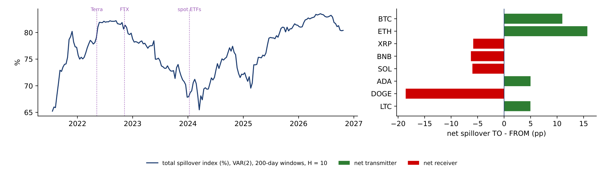
Section summary
Crypto returns form a dense network: the mean pairwise correlation is 0.60, Ether and Polkadot are the hubs of the minimum spanning tree, and one common factor explains about two thirds of the variance on average. Spillovers show direction: about 73% of a coin's forecast-error variance comes from other coins, Ether and Bitcoin are the largest net transmitters and Dogecoin the largest net receiver.
An asset class is a group of assets with similar risk and return behaviour, such as equities or government bonds. The section asks whether crypto assets form such a group, using the statistical features of their returns rather than their technology. It first builds a small map of 33 assets for 2021–2026 and then reads the larger study of Pele, Wesselhöfft, Härdle, Kolossiatis & Yatracos (2023) on 906 assets.
The idea of Pele, Wesselhöfft, Härdle, Kolossiatis & Yatracos (2023) is to describe every asset by the stylised facts of its returns, its statistical "phenotype", and then to ask whether crypto assets form their own group. The lecture applies a small version of this idea to 33 assets: 19 coins, 6 equities, a Treasury bond fund, gold, silver, oil and 4 foreign-exchange (FX) rates. The data are daily log returns from 2021 to 2026. Each asset is measured on its own trading days: coins trade every day, while gold, FX and the S&P 500 stock index trade from Monday to Friday. A closing price repeated over a holiday would add returns of exactly zero that are not market moves and would understate volatility.
Each asset is described by six features: the annualised volatility; the skewness, which measures asymmetry; the logarithm of the kurtosis, which measures how heavy the tails are; the Hill tail index of the top 5% of returns, where a smaller value means heavier tails (Lecture 2); the lag-1 autocorrelation of absolute returns, \(\mathrm{ACF}|r_t|\), a measure of volatility clustering; and the 1% quantile of returns, in standard-deviation units. Each feature is standardised across the 33 assets to mean 0 and standard deviation 1, so that no feature dominates because of its units. Volatility remains one of the six features.
A principal component analysis of the six standardised features gives a first component (PC1) that explains 62.7% of their variance and a second (PC2) that explains 18.5%. The loadings of PC1, the weights of the standardised features, are 0.40 for volatility, 0.39 for skewness, 0.46 for kurtosis, \(-0.44\) for the tail index, 0.46 for \(\mathrm{ACF}|r|\) and 0.27 for the 1% quantile. All features point in the same direction: higher volatility, more skew, heavier tails and more clustering. PC1 is therefore a "wildness" factor.
The assets are then grouped by \(k\)-means clustering, which splits them into \(k\) groups so that each asset is close to the centre of its group. With \(k = 3\), the first cluster contains all 14 traditional assets and four coins: Bitcoin, Ether, Litecoin and Chainlink. The second contains the other 14 coins, and the third contains Dogecoin alone, whose skewness of 5.9 is far from every other asset.
In brief
Before the six features are combined, it helps to look at two of them directly. The chart places each asset by its annualised volatility (horizontal axis) and its Hill tail index (vertical axis), computed from daily log returns 2021–2026. A lower tail index means a heavier tail, that is, more frequent extreme returns. The colours give the conventional asset class.
Volatility separates the groups completely. Every coin has an annualised volatility above 56%: Bitcoin is the calmest coin at 57%, Dogecoin the most volatile at 132%, and the median coin is at 95%. Every traditional asset is below 38%; the most volatile is the silver fund at 37%, and the exchange rates are near 7–9%.
The tail index does not separate them. The coins range from 2.12 (Tron) to 3.66 (Chainlink), the traditional assets from 3.07 (silver) to 5.10 (Exxon), so the two ranges overlap. Bitcoin's tail index, 3.56, is even slightly higher than the 3.44 of the S&P 500: in this sample its tail is, if anything, lighter. This is why Bitcoin ends up next to the equities on the map once all six features are standardised: it is far apart from them only on volatility.
In brief
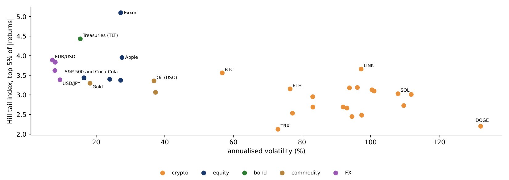
The chart places each of the 33 assets on the first two principal components: the horizontal axis is PC1, the "wildness" factor (63% of the variance), the vertical axis is PC2 (19%). The colours give the conventional class: crypto in orange, equities in dark blue, the bond fund in green, commodities in brown and FX rates in purple.
The traditional assets lie on the left, at negative PC1. Most coins form a cloud to the right of zero, and Dogecoin sits alone at the far right, near 6.5. Ether, Litecoin and Chainlink lie just left of zero, and Bitcoin lies among the traditional assets, next to the S&P 500. Its volatility of 57% a year is far above the 16% of the S&P 500, but volatility is one feature of six: its Hill tail index, 3.56, is close to the 3.44 of the S&P 500, and on the other five features, too, Bitcoin resembles equities.
A second version of the map drops volatility and keeps only the five features of shape. With the same method, Bitcoin, Ether, Litecoin, Chainlink, Polkadot, Avalanche (AVAX), Cosmos and Algorand join the cluster of all 14 traditional assets; ten other coins form a second cluster and Dogecoin a third. The large coins thus resemble traditional assets in the shape of their returns, while most smaller coins remain a separate group.
In brief
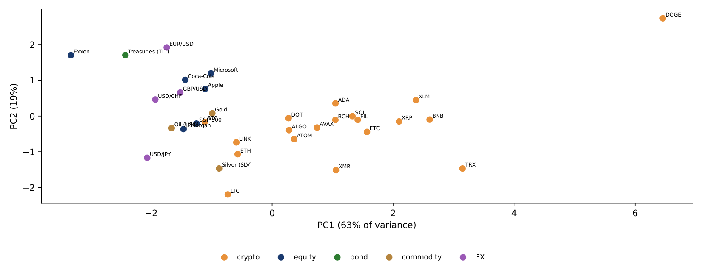
The score of an asset on the first principal component is a weighted sum of its standardised features. The worked example computes it for Bitcoin by hand, in three steps.
The first step standardises each feature across the 33 assets, \(z = (x - \text{mean})/\text{sd}\). Bitcoin's annualised volatility is 56.7%, the mean of the 33 assets is 62.3% and their standard deviation is 38.9%, so \(z = (56.7 - 62.3)/38.9 = -0.14\): Bitcoin is slightly less volatile than the average asset of this sample, because 19 of the 33 assets are coins. Its Hill tail index is 3.56 against a mean of 3.22 and a standard deviation of 0.61, so \(z = +0.57\). The other four \(z\)-values are \(-0.26\) for skewness, \(-0.69\) for log kurtosis, \(-0.50\) for the autocorrelation of \(|r_t|\) and \(-0.61\) for the 1% quantile.
The second step multiplies each \(z\) by its PC1 loading and adds the products. The loadings are 0.40, 0.39, 0.46, \(-0.44\), 0.46 and 0.27; the products are \(-0.06\), \(-0.10\), \(-0.31\), \(-0.25\), \(-0.23\) and \(-0.16\), and their sum is \(-1.11\). The tail index enters with a negative loading, so Bitcoin's lighter-than-average tail lowers its score, as does its low kurtosis.
The third step compares this score with those of other assets: the S&P 500 scores \(-1.25\), Ether \(-0.57\) and Dogecoin \(+6.46\). Bitcoin ranks 23rd of 33 on the "wildness" factor, closer to the S&P 500 than to Ether. The largest contributions come from kurtosis and the tail index, two features of shape: on the shape of its returns, Bitcoin is calmer than the average asset of the sample.
In brief
| vol | skew | kurtosis | tail index | ACF\(|r|\) | \(Q_{1\%}\) | sum | |
|---|---|---|---|---|---|---|---|
| loading \(w_k\) | 0.40 | 0.39 | 0.46 | \(-0.44\) | 0.46 | 0.27 | |
| \(z_k\) of BTC | \(-0.14\) | \(-0.26\) | \(-0.69\) | \(0.57\) | \(-0.50\) | \(-0.61\) | |
| \(w_k z_k\) | \(-0.06\) | \(-0.10\) | \(-0.31\) | \(-0.25\) | \(-0.23\) | \(-0.16\) | \(\mathbf{-1.11}\) |
The study of Pele, Wesselhöfft, Härdle, Kolossiatis & Yatracos (2023) uses several indicators that have not appeared earlier in the course. The stable \(\alpha \in (0, 2]\) is the tail parameter of a stable distribution fitted to all returns. The value \(\alpha = 2\) gives the Normal distribution; values below 2 mean infinite variance, and a smaller \(\alpha\) means heavier tails. The Hill tail index of Lecture 2, by contrast, is estimated from the largest returns only and is usually between 2 and 4 for financial returns. The two come from different models and different parts of the distribution, so their values cannot be compared.
The Hurst exponent \(H \in (0, 1)\) measures memory in returns: 0.5 means no memory, values above 0.5 persistent trends and values below 0.5 mean reversion. The FIGARCH \(d \in [0, 1]\), from the fractionally integrated generalised autoregressive conditional heteroskedasticity (GARCH) model, measures memory in volatility. With \(d = 0\) the model is a GARCH, in which shocks to volatility fade geometrically; a larger \(d\) means that they fade more slowly, hyperbolically.
Three statistics describe the analysis itself. A factor loading is the correlation between an indicator and a factor, from \(-1\) to 1; an indicator "belongs" to the factor on which it loads most. The Kaiser–Meyer–Olkin (KMO) measure, between 0 and 1, is the share of the correlation among the indicators that is common to all of them; values above 0.8 mean that the data are well suited to factor analysis. The Nagelkerke \(\tilde R^2\), between 0 and 1, is a pseudo-\(R^2\) for a logit model, rescaled so that 1 means perfect classification.
In brief
Pele, Wesselhöfft, Härdle, Kolossiatis & Yatracos (2023) study 906 assets: 234 cryptos, 635 stocks, 13 FX rates, 17 commodities, 5 bonds and 2 real-estate indices, with daily data from January 2014 to November 2020. Each asset is described by 24 indicators, computed on expanding windows: variance, skewness, kurtosis, the stable parameters \(\alpha\) and \(\gamma\), left and right quantiles and conditional tail expectations (CTE, the mean return beyond a quantile) at levels from 0.5% to 5%, the first-order autocorrelation \(\rho(1)\), the Hurst exponent and the FIGARCH \(d\).
A factor analysis reduces the 24 indicators to a few common factors. It uses principal components with a Varimax rotation, which makes each indicator load mainly on one factor; with KMO \(= 0.92\) the data are well suited. Three factors explain 88% of the variance. The tail factor explains 76% and collects the quantiles, the CTEs, the variance and the stable parameters; the memory factor (Hurst, \(\rho(1)\), \(d\)) and the moment factor (skewness, kurtosis) explain 6% each.
The authors then ask how well each factor separates cryptos from other assets, with a logit model \(P(\text{crypto}) = \Lambda(\beta_0 + \beta_1 F)\), where \(F\) is the factor score and \(\Lambda(u) = 1/(1+e^{-u})\). For the tail factor \(\hat\beta_1 = 15.45\), with a standard error (SE) of 4.44, and Nagelkerke \(\tilde R^2 = 0.992\): the tail factor alone classifies almost perfectly. For the moment factor \(\hat\beta_1 = -0.74\) with \(\tilde R^2 = 0.12\), and the memory factor is not significant.
Two classifiers confirm the result. A support vector machine (SVM), which draws the boundary that best separates two groups, reaches 99.56% accuracy on two factors, and only Bitcoin and Tether (USDT) are misclassified; \(k\)-means with 6 clusters reaches 98.45%. The authors conclude that cryptos are a separate asset class, "mainly due to the tail factor", and that Bitcoin lies at the border.
In brief
The table reports the average of six indicators within each class, for daily returns in decimals over 2014–2020, from the study of Pele, Wesselhöfft, Härdle, Kolossiatis & Yatracos (2023) on 906 assets. For cryptos, the 1% daily quantile averaged over 234 cryptos is \(Q_{1\%} = -0.366\): a loss of 36.6% or more occurs on 1% of days; for stocks the figure is 5.4% and for FX rates 1.3%. The \(\mathrm{CTE}_{1\%}\), the mean loss on those worst days, is 56.4% for cryptos and 8.5% for stocks.
The variance of cryptos, \(26.442 \times 10^{-3}\), is about 60 times that of stocks, \(0.400 \times 10^{-3}\). Their stable \(\alpha\), 1.34, is lower than that of stocks, 1.60, which means heavier tails within the stable model. Cryptos are also the only class with positive average skewness (0.686), while every traditional class is skewed to the left. The FIGARCH \(d\) of cryptos, 0.553, is close to that of bonds (0.545): long memory in volatility does not separate them.
The authors also use projection pursuit, a search for directions in the space of indicators along which two groups separate. Without the stable \(\alpha\), no direction separates cryptos perfectly; with it, 181,618 directions do. For portfolios, the average 1% value at risk (VaR) of an equal-weight portfolio, computed by historical simulation, is 3.01% for classical assets, 16.34% for cryptos and 4.37% for a mixed portfolio.
The data of 2021–2026 in the previous slides are consistent with "Bitcoin at the border": on standardised features, and on shape features alone, Bitcoin and Ether group with traditional assets, while most altcoins stay apart.
In brief
| Cryptos | Stocks | Bonds | FX | Commodities | Real estate | |
|---|---|---|---|---|---|---|
| \(\sigma^2 \cdot 10^3\) | 26.442 | 0.400 | 0.745 | 0.028 | 0.388 | 0.146 |
| stable \(\alpha\) | 1.342 | 1.602 | 1.460 | 1.722 | 1.662 | 1.696 |
| \(Q_{1\%}\) | \(-0.366\) | \(-0.054\) | \(-0.057\) | \(-0.013\) | \(-0.050\) | \(-0.034\) |
| \(\mathrm{CTE}_{1\%}\) | \(-0.564\) | \(-0.085\) | \(-0.097\) | \(-0.017\) | \(-0.074\) | \(-0.052\) |
| skewness | \(0.686\) | \(-0.560\) | \(-0.829\) | \(-0.937\) | \(-0.495\) | \(-1.142\) |
| FIGARCH \(d\) | 0.553 | 0.289 | 0.545 | 0.407 | 0.426 | 0.510 |
Section summary
By the shape of their returns, and above all by their tails, crypto assets form a separate class: in Pele, Wesselhöfft, Härdle, Kolossiatis & Yatracos (2023) the tail factor explains 76% of the variance of 24 indicators and separates cryptos from other assets with 99.6% accuracy. The largest coins, Bitcoin and Ether, lie at the border and in 2021–2026 group with traditional assets, while most altcoins and Dogecoin remain apart.
An event study measures how a price reacts to a dated event by comparing the actual return with the return that would have been expected without the event. The section explains the method, applies it to 13 upgrades of the Ethereum protocol and compares the result with a study that looks at attention, activity and volatility as well as prices.
The method, surveyed by MacKinlay (1997), has three steps. The first defines the normal return, the return expected without the event. Here it comes from a market model estimated on the window from 250 to 31 days before the event, 220 days that end well before any news can leak:
where \(R_t\) is the return of the asset and \(R_{m,t}\) the return of the market. The second step computes the abnormal return (AR), the actual return minus the normal return, and adds it up over an event window from day \(\tau_1\) to day \(\tau_2\) to obtain the cumulative abnormal return (CAR):
The third step tests whether the CAR differs from zero. For one event, \(t = \mathrm{CAR}(\tau_1,\tau_2) / \sqrt{L\,\hat\sigma_u^2}\), where \(L = \tau_2 - \tau_1 + 1\) is the length of the window and \(\hat\sigma_u^2\) the residual variance of the market model. This simplified version ignores the estimation error of \(\hat\alpha\) and \(\hat\beta\). The error is small when the estimation window is long: with 220 estimation days, \(|t|\) is overstated by only 0.7–1.7% for the Ether upgrades.
For many events \(e = 1, \dots, N\), three tests ask whether the average reaction is zero:
The cross-sectional (CS) test divides the mean CAR by its standard error across events, with \(s_{\mathrm{CAR}}\) the standard deviation of the CARs. The simplified Boehmer–Musumeci–Poulsen (BMP) test first standardises each CAR by its own residual volatility (the standardised CAR, SCAR), so that events in calm and in volatile periods weigh equally; the forecast-error correction of the original test is left out. The sign test counts the positive CARs, which under the null hypothesis of no effect follow a binomial distribution \(\mathrm{Bin}(N, 0.5)\).
The application studies Ether against an equal-weighted index of 11 other coins as the market, with daily data. There are 13 upgrade families, from Istanbul in 2019 to Fusaka in 2025, each with two dates: the formal schedule (when the date was fixed) and the implementation (when the upgrade went live). The CS, BMP and sign tests assume that events are independent. When events cluster in time, this is only approximately true. For Ether, two schedule dates, Istanbul and Muir Glacier, are 2 days apart, and 17 of the 26 estimation windows contain another event day.
In brief
The Merge of 15 September 2022 moved Ethereum from proof of work to proof of stake. The worked example computes its cumulative abnormal return by hand. The market model, fitted on days \(-250\) to \(-31\) before the event, gives \(\hat\alpha = 0.064\%\), \(\hat\beta = 1.054\) and a residual standard deviation \(\hat\sigma_u = 2.08\%\) a day. In that window Ether moved almost one for one with the index of 11 other coins.
The first step computes the abnormal return of each day as the actual return minus the normal return predicted by the model, \(\mathrm{AR}_t = R_t - \hat\alpha - \hat\beta R_{m,t}\). On 14 September, Ether rose 3.36% and the index 1.66%; the model predicted \(0.064 + 1.054 \times 1.66 = 1.81\%\), so \(\mathrm{AR} = 1.54\%\). On the event day Ether fell 10.51% while the index fell 2.85%; the model predicted \(0.064 - 1.054 \times 2.85 = -2.94\%\), so \(\mathrm{AR} = -10.51 + 2.94 = -7.56\%\). On 16 September Ether fell 2.70% while the index rose 2.22%, so \(\mathrm{AR} = -2.70 - 0.064 - 1.054 \times 2.22 = -5.10\%\).
The second step adds the three abnormal returns: \(\mathrm{CAR}[-1, 1] = 1.54 - 7.56 - 5.10 = -11.13\%\). The third step computes its standard error under the null hypothesis of no effect. Three independent daily residuals with standard deviation 2.08% add up to a standard deviation of \(2.08 \times \sqrt 3 = 3.61\%\). The fourth step divides: \(t = -11.13/3.61 = -3.09\). Since \(|t| > 1.96\), the abnormal return of the Merge is significant at 5% on its own.
The calculation shows where the result comes from. Only a small part of Ether's fall on the event day is explained by the market; the rest, and the continued fall on the next day while the market rose, is specific to Ether.
In brief
| day | ETH \(R_t\) | index \(R_{m,t}\) | \(\mathrm{AR}_t\) | calculation |
|---|---|---|---|---|
| \(-1\) (14 Sep) | 3.36 | 1.66 | 1.54 | \(3.36 - 0.064 - 1.054 \times 1.66\) |
| \(0\) (15 Sep) | \(-10.51\) | \(-2.85\) | \(-7.56\) | \(-10.51 - 0.064 + 1.054 \times 2.85\) |
| \(+1\) (16 Sep) | \(-2.70\) | 2.22 | \(-5.10\) | \(-2.70 - 0.064 - 1.054 \times 2.22\) |
The table lists, for each upgrade, the CAR over the three days around the implementation date, \([-1, 1]\), and its \(t\) statistic. Most CARs are small and not significant. Two are significant at 5% and they have opposite signs: the Merge of September 2022, which moved Ethereum from proof of work to proof of stake, has \(\mathrm{CAR} = -11.1\%\) (\(t = -3.09\)), and Pectra in May 2025 has \(+11.3\%\) (\(t = 2.92\)). Berlin (\(-9.9\%\)) and London (\(+8.7\%\)), the upgrade that introduced the fee mechanism EIP-1559 (EIP: Ethereum Improvement Proposal), are large but not significant at 5% (\(t = -1.79\) and \(t = 1.35\)).
The cross-sectional tests ask whether the upgrades move the price on average. At implementation, the mean \(\overline{\mathrm{CAR}}[-1,1] = -0.18\%\), with \(t_{CS} = -0.10\) (p-value 0.92) and \(t_{BMP} = -0.20\). Seven of 13 CARs are positive, which gives a sign-test p-value of 1.00. Over the longer window \([0, 5]\) the mean CAR is \(-0.21\%\) (p 0.94). At the schedule dates the mean \(\overline{\mathrm{CAR}}[-1,1]\) is \(-0.59\%\) (p 0.63), and the paired difference between implementation and schedule is \(+0.41\%\) (p 0.84).
We do not reject the hypothesis of a zero average reaction. The large CARs of the Merge and Pectra have opposite signs, and no common revaluation of Ether is detectable in these windows. Individual upgrades may still matter, but 13 events with large and noisy abnormal returns cannot establish a common effect.
In brief
| implementation | CAR\([-1,1]\) | \(t\) |
|---|---|---|
| Istanbul (Dec 2019) | \(0.4\%\) | \(0.12\) |
| Muir Glacier | \(-0.3\%\) | \(-0.10\) |
| Beacon Chain | \(1.3\%\) | \(0.41\) |
| Berlin | \(-9.9\%\) | \(-1.79\) |
| London (EIP-1559) | \(8.7\%\) | \(1.35\) |
| Altair | \(4.4\%\) | \(0.84\) |
| Arrow Glacier | \(-4.3\%\) | \(-0.85\) |
| Gray Glacier | \(-4.6\%\) | \(-1.48\) |
| Merge (Sep 2022) | \(\mathbf{-11.1\%}\) | \(\mathbf{-3.09}\) |
| Shapella | \(3.3\%\) | \(1.17\) |
| Dencun | \(-3.1\%\) | \(-1.16\) |
| Pectra (May 2025) | \(\mathbf{11.3\%}\) | \(\mathbf{2.92}\) |
| Fusaka (Dec 2025) | \(1.7\%\) | \(0.54\) |
The chart shows all 26 cumulative abnormal returns \(\mathrm{CAR}[-1, +1]\): for each upgrade family, the schedule date in dark blue and the implementation date in purple. The red whiskers around zero mark the 5% band of each event, \(\pm 1.96\,\hat\sigma_u\sqrt 3\), computed from that event's own market model. A bar that reaches beyond its whisker is significant at 5%.
The bands differ from event to event because the residual volatility does. The narrowest is \(\pm 5.2\%\), for the schedule date of Dencun in early 2024, a calm period; the widest is \(\pm 12.6\%\), for the implementation of London in August 2021, when the whole market was very volatile. The same CAR can therefore be significant for one event and not for another.
Three of the 26 bars leave their band: the implementation dates of the Merge (\(-11.1\%\)) and of Pectra (\(+11.3\%\)), and the schedule date of Gray Glacier (\(-10.0\%\)). If no upgrade had any effect, about \(26 \times 0.05 = 1.3\) dates would leave their band by chance, so three is not far from what chance produces. Berlin's implementation CAR of \(-9.9\%\) is almost as large as the Merge's but stays inside its band of \(\pm 10.9\%\), because Ether was more volatile before Berlin.
In brief
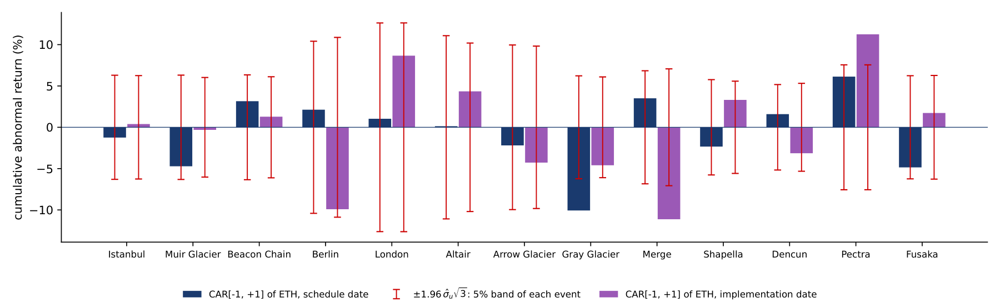
The cross-sectional test asks whether the upgrades move the price on average. The worked example applies it to the 13 implementation CARs\([-1, 1]\), in %: 0.39, \(-0.31\), 1.28, \(-9.91\), 8.67, 4.35, \(-4.27\), \(-4.59\), \(-11.13\), 3.32, \(-3.14\), 11.25 and 1.73.
The first step is the mean: the CARs add up to \(-2.36\), so \(\overline{\mathrm{CAR}} = -2.36/13 = -0.18\%\). The second step measures the spread across events, the sample standard deviation \(s_{\mathrm{CAR}} = 6.50\%\), and divides it by \(\sqrt{13}\) to obtain the standard error of the mean, 1.80%. The third step forms \(t_{CS} = -0.18/1.80 = -0.10\). With 12 degrees of freedom the 5% critical value is 2.18, and the two-sided p-value is 0.92: we do not reject a zero mean effect.
The fourth step is the sign test, which uses only the signs. Seven of the 13 CARs are positive. If the upgrades had no effect, the number of positive CARs would follow a binomial distribution with 13 trials and probability 0.5, whose mean is 6.5; seven is as close to the centre as an integer can be, and the p-value is 1.00.
Two individual CARs, the Merge and Pectra, are significant on their own, but with opposite signs, and they cancel in the mean. The cross-sectional test uses the spread of the CARs across events rather than the residual volatility of one market model. It therefore allows each upgrade to have its own true effect and asks only whether these effects are zero on average.
In brief
The chart plots the cumulative abnormal return of Ether from 10 days before to 10 days after each event, for the schedule dates (left) and the implementation dates (right). Each thin purple line is one upgrade family, the thick red line is the mean CAR across the 13 families, and the dotted vertical line marks the event day.
The individual paths fan out in both directions, some to more than \(+25\%\) and others below \(-30\%\) within ten days, while the mean path stays close to zero in both panels. This is the picture behind the non-significant cross-sectional tests: large reactions exist, but they do not share a sign.
The market model behind the chart differs moderately across events. The estimated beta of Ether to the coin index ranges from 0.75 (Dencun) to 1.20 (Fusaka), and the residual standard deviation from 1.5% to 3.7% a day. A daily residual volatility of 3.7% gives a three-day standard deviation of about \(3.7\% \times \sqrt 3 \approx 6.4\%\), which explains why CARs of 9–10% need not be significant.
In brief
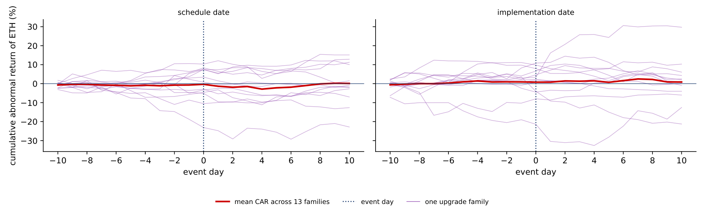
Lin, Găman, Wang & Pele (2026) study the same 13 upgrade families, but look at outcomes beyond returns: internet search attention, the number of active addresses on the chain and volatility. They compare Ether with other coins in two ways. The cross-asset difference-in-differences estimate \(\hat\delta_{e,s}\) is the change of an outcome for Ether around event \(e\) minus the average change for \(J_e\) comparison ("donor") coins:
The synthetic control (SC) \(\hat y^{SC}_{e,t}\) builds a weighted average of donor coins that matches Ether before the event; the gap after the event is the estimated effect. The tests are exact sign-flip tests at the level of upgrade families, and the p-values are adjusted for testing many outcomes with the Benjamini–Hochberg (BH) method.
The estimates are in log points, where 0.01 is about 1%. Google search attention rises already on the schedule day (0.184, BH p 0.034) and more on the implementation day (0.350, BH p 0.004), which is \(e^{0.350} - 1 = +42\%\). Active addresses fall at implementation, by 0.145 log points or 13.5%, in the synthetic-control comparison (BH p 0.020). The median hourly log realised volatility (RV) in the implementation hours rises by 0.316, or 37% (BH p 0.007). The share of jumps in price variation over 24 hours, measured with bipower variation, does not change (estimate near 0, BH p 0.99), and the paired CAR between implementation and schedule is \(-0.0098\) with a raw p-value of 0.375: no repricing is detected.
An upgrade therefore goes with more attention, more volatility and fewer active addresses, but not with a detectable price change. Two common interpretations go beyond these estimates. A non-significant CAR does not prove that upgrades are "priced in", and fewer active addresses do not show that "users pause" during an upgrade: both are hypotheses consistent with the numbers, not conclusions from them.
In brief
| outcome (log points) | estimate | BH p | meaning |
|---|---|---|---|
| Google attention, schedule day | \(0.184\) | \(0.034\) | search starts at scheduling |
| Google attention, implementation day | \(0.350\) | \(0.004\) | \(+42\%\) |
| active addresses, implementation (synthetic control) | \(-0.145\) | \(0.020\) | \(-13.5\%\) |
| median hourly log realised volatility (RV), implementation hours | \(0.316\) | \(0.007\) | \(+37\%\) volatility |
| jump share, bipower variation (24 h) | \(\approx 0\) | \(0.99\) | no lasting change |
| paired CAR, implementation minus schedule | \(-0.0098\) | raw p \(0.375\) | no repricing detected |
Section summary
Over 13 Ethereum upgrades, abnormal returns are large for some events, of both signs, and the mean CAR is not distinguishable from zero. Upgrades go with measurable changes in attention, on-chain activity and volatility, which a study limited to prices would miss.
A sentiment index turns a large amount of text, such as news or social-media posts, into a daily number that measures how positive or negative the mood is. The section describes how the BitMood index is built from Facebook posts, reads its two applications, a trading rule and volume forecasts, and sets out the minimum standard that such results must meet.
Conda, Găman, Bâg, Mazurencu-Marinescu-Pele, Pele & Härdle (2026) build the index from 120,000 English Facebook posts about Bitcoin, a 5% monthly sample of about 2.3 million posts collected with the CrowdTangle tool, from 3 January 2015 to 15 October 2023. Each post is scored by FinBERT, a language model trained on financial text, which gives the probabilities that the post is positive, neutral or negative, \(S^+\), \(S^0\) and \(S^-\). The compound score (CS) of post \(i\) is \(\mathrm{CS}_i = S^+_i - S^-_i\).
Posts with many interactions reach more readers, so the daily index weights each post by its total interactions \(T_i\). The daily weighted probabilities and the engagement-weighted compound score (WC) of day \(d\) are
The index is \(+1\) when all weighted posts are certainly positive, \(-1\) when all are certainly negative and 0 when positive and negative weights balance.
A second measure, the reaction-intensity score (SI) of a post, uses the Facebook reactions with weights from the literature: \(\mathrm{SI}_i = \sum_k(\log N_{i,k} + 1)\,w_k\), where \(N_{i,k}\) is the number of reactions of type \(k\); the weights are 0.1 for a like, 0.05 for a comment, 0.2 for a share, 0.5 for love, wow and haha, and \(-0.5\) for sad and angry. Because \(\log 0\) is undefined and the article does not say how posts with no reactions of a type are treated, a reader who reproduces the score must choose a rule; \(\log(1 + N_{i,k})\) is a common fix.
A topic model, latent Dirichlet allocation (LDA), groups the words of the posts into themes: investment (42.8% of the tokens), trading and blockchain (24.6%), gaming (14.3%), links to other social media (13%) and business (5.3%).
In brief
The first application is a trading rule. Following an earlier rule of Preis et al., the signal compares today's value of a series \(f\) with its average over the previous \(\delta t\) days,
The rule is contrarian: it buys Bitcoin when sentiment has fallen below its recent average and sells when it has risen. Performance is measured by the Sharpe ratio (SR), the mean return of the strategy divided by the standard deviation of its returns; Lecture 7 annualises it by multiplying the daily ratio by \(\sqrt{365}\).
The best configuration reported for the test period, 1 January – 15 October 2023, uses a window of \(\delta t = 3\) days, the compound sentiment and a transaction cost of \(10^{-5}\). It reaches a cumulative return of 1.321 and a Sharpe ratio of 0.210. Three details limit the reading of these numbers. The article does not say whether the return is a simple return, a log return or a wealth multiple, nor whether the SR is daily or annualised. A cost of \(10^{-5}\) of the amount traded is 0.1 basis point (bp, 0.01%) per trade, far below typical exchange fees.
The main caveat concerns selection. The best of many combinations, 7 windows times 6 cost levels times several sentiment series, was chosen on the same 2023 period on which it is scored. The reported performance is then the best of many tries, which is higher than what the chosen rule can be expected to deliver on new data; Lecture 7 measures this effect.
In brief
The second application forecasts the daily trading volume of Bitcoin from January 2022 to October 2023, with sentiment among the inputs. Seven models are compared: a linear regression, a random forest (RF), an average of many decision trees, and five neural networks: a stacked long short-term memory (LSTM) network, a convolutional neural network (CNN), a combined LSTM-CNN, a gated recurrent unit (GRU) network and a bidirectional LSTM (Bi-LSTM). The accuracy measure is the root mean squared error (RMSE) of the scaled volume, the square root of the mean squared forecast error; lower is better.
The correct reading uses the two rows in order: select on the validation period, report on the test period. The linear regression has the lowest validation RMSE, 0.1423, so it is the model to choose; its test RMSE is 0.1935, only 0.0005 above the best test value, 0.1930 of the Bi-LSTM. Picking the Bi-LSTM because of its test value would use the test data for selection. In this comparison the simplest model is as accurate as the most complex ones.
The Shapley additive explanations (SHAP) of the linear model, which split each forecast into contributions of the inputs, are dominated by lagged volume and negative sentiment. This does not show that sentiment improves the forecast: every model in the table uses sentiment, and none is compared with a model that uses lagged volume alone. SHAP describes how a model uses its inputs; it does not replace that comparison. The study also gives no evidence on returns.
In brief
| Lin. reg. | RF | stacked LSTM | CNN | LSTM-CNN | GRU | Bi-LSTM | |
|---|---|---|---|---|---|---|---|
| validation | \(\mathbf{0.1423}\) | 0.1767 | 0.2323 | 0.2179 | 0.2501 | 0.1840 | 0.1701 |
| test | \(\mathbf{0.1935}\) | 0.2355 | 0.2453 | 0.2578 | 0.2766 | 0.1959 | 0.1930 |
A sentiment model of trading volume is useful only if it beats a forecast built from past volume alone. The chart shows how strong that benchmark is over the BitMood volume sample. The left panel plots the logarithm of daily Bitcoin trading volume from EODHD, 1 January 2022 – 15 October 2023 (653 days), in orange, with its 30-day mean in dark blue. The right panel plots today's log volume against yesterday's, with the fitted line of an autoregression of order 1, AR(1).
Volume is highly persistent. The autocorrelation of log volume is 0.78 at a lag of one day, 0.74 at seven days and still 0.39 at thirty days. The seven-day value reflects a weekly pattern: log volume is 0.33 below its mean on Saturdays and 0.28 below it on Sundays, so the weekday alone carries information. The AR(1) on yesterday's log volume explains 61% of the variance of today's (\(R^2 = 0.61\)).
The root mean squared error (RMSE) of simple forecasts, in logs, makes the point concrete: 0.50 when every day is forecast by the sample mean, 0.33 for "the same as yesterday" and 0.31 for the AR(1). A sentiment model has to lower the error beyond these values, on the same test days. The BitMood table reports RMSEs of scaled volume, not of log volume, so the numbers are not directly comparable; more importantly, it does not report the same model without sentiment, which is the comparison that would show what sentiment adds.
In brief
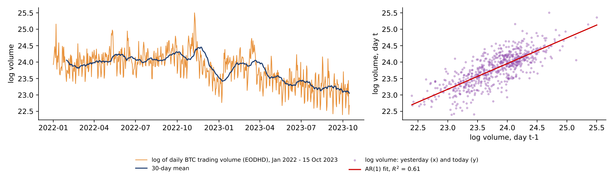
A back-test evaluates a forecasting model or trading rule on past data as if it had been used at the time. The two BitMood applications show the most common weaknesses, and they lead to a minimum standard. The data are split into three periods, in time order. The training period estimates the parameters. The validation period chooses the model, the window, the threshold or the cost setting; Lecture 4 chose its alarm threshold this way. The test period scores the chosen configuration once, and nothing is changed after seeing the result.
The model must be compared with a benchmark that does not use the new information, scored on the same test days. For BitMood this is the same volume model without the sentiment features. The comparison is reported as a difference in RMSE with a confidence interval, for example with the Diebold–Mariano test of Lecture 7.
Finally, the number of configurations tried must be reported, because the best of many tries looks better than it is. Lecture 7 applies this standard to machine-learning forecasts of Bitcoin and adds the corrections for trying many rules.
In brief
Section summary
Text sentiment can be measured at scale with language models and weighted by engagement. The published results show that sentiment models forecast volume about as well as a linear regression, but they do not test whether sentiment adds to lagged volume, and the trading result was selected on its own test period.
Crypto returns form a dense network. The mean pairwise correlation of 19 coins over 2021–2026 is 0.60, Ether and Polkadot are the hubs of the minimum spanning tree, and the first principal component explains on average 68% of the variance in 90-day windows (59% in October 2026). The spillover analysis adds direction: 73% of the forecast-error variance of eight large coins comes from other coins, Ether and Bitcoin are the largest net transmitters and Dogecoin the largest net receiver; the rolling index reached 83.5% in May 2026.
By their tails, cryptos form a separate asset class: in Pele, Wesselhöfft, Härdle, Kolossiatis & Yatracos (2023) the tail factor explains 76% of the variance of the indicators and an SVM classifies 99.6% of assets correctly. In 2021–2026, on standardised features and on shape alone, Bitcoin and Ether group with classical assets.
Ethereum upgrades produce large CARs of both signs, and the mean CAR is not distinguishable from zero; Lin, Găman, Wang & Pele (2026) report effects on attention, activity and volatility instead. Sentiment models forecast volume about as well as a linear regression, whether sentiment adds to lagged volume is not tested, and trading claims need selection on validation data.
In brief
The five exercises use the numbers of the lecture. Each asks what a measure shows and what it does not show: the role of Bitcoin in the tree and in the spillover table, the diversification benefit at different absorption ratios, the meaning of a negative NET spillover, the conclusions from two significant CARs among thirteen, and the questions to ask about a reported Sharpe ratio.
In brief
The Appendix holds optional material for self-study; it is not examined. It covers a test for herding among crypto investors and the construction of price indices for unique assets such as digital art.
Herding means that investors follow the market instead of their own information. The test of Christie & Huang (1995) and Chang, Cheng & Khorana (2000) uses the cross-sectional absolute deviation (CSAD), the average distance of the coin returns from the market return on day \(t\), \(\mathrm{CSAD}_t = N^{-1}\sum_{i=1}^N |R_{i,t} - R_{m,t}|\). Under rational pricing, as in the capital asset pricing model (CAPM), dispersion rises linearly with the size of the market move \(|R_{m,t}|\); under herding, coins move together in large moves and dispersion rises less. The regression \(\mathrm{CSAD}_t = \alpha + \gamma_1 |R_{m,t}| + \gamma_2 R_{m,t}^2 + \varepsilon_t\) therefore tests \(H_0: \gamma_2 = 0\) against herding, \(\gamma_2 < 0\). On 19 coins with an equal-weighted market return, \(n = 2{,}121\) days and heteroskedasticity- and autocorrelation-consistent (HAC) standard errors with 10 lags, the full sample gives \(\hat\gamma_1 = 0.254\) (\(t = 10.76\)) and \(\hat\gamma_2 = -0.0028\) (\(t = -2.88\)), with \(R^2 = 0.248\); on up days and on down days separately \(\hat\gamma_2\) is not significant (\(t = 0.03\) and \(-0.12\)).
In brief
| sample | \(\hat\gamma_1\) (\(t\)) | \(\hat\gamma_2\) (\(t\)) | \(R^2\) |
|---|---|---|---|
| all days | \(0.254\) (\(10.76\)) | \(-0.0028\) (\(-2.88\)) | \(0.248\) |
| up days (\(R_m > 0\)) | \(0.0003\) (\(0.03\)) | ||
| down days | \(-0.0001\) (\(-0.12\)) |
The left panel plots each day's CSAD against the equal-weighted market return, with the fitted regression in red; the right panel shows the \(t\) statistic of \(\gamma_2\) in rolling 365-day windows, with the dashed lines at \(\pm 1.96\). The full-sample curve is concave, with its vertex at \(|R_m| = \hat\gamma_1/(2|\hat\gamma_2|) \approx 45\%\), and the curvature rests on the 16 days with \(|R_m| > 15\%\). In the rolling windows, \(\gamma_2\) is significantly negative in only 1.7% of windows and significantly positive, which indicates anti-herding, in 39%. Herding in crypto is an episode rather than a permanent trait, and a full-sample coefficient can hide the opposite behaviour during most of the sample.
In brief
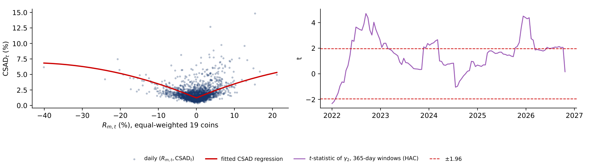
Each non-fungible token (NFT) or digital artwork is unique and trades rarely, so the works sold in one quarter differ from those sold in the previous quarter. The median sale price then mixes price changes with composition changes. A time-dummy hedonic regression separates the two: the log price of sale \(n\) is regressed on dummies \(D_{n,t}\) for the quarter of sale and on the characteristics \(\mathbf x_n\) of the work (rarity, artist, size, collection), \(\ln P_n = \sum_{t=1}^{T}\delta_t D_{n,t} + \mathbf x_n'\boldsymbol\beta + \varepsilon_n\). The coefficient \(\hat\delta_t\) is the quality-adjusted log price level of quarter \(t\), and the index is \(I_t = 100\,e^{\hat\delta_t}\). The same method is used for the Digital Art Index (DAI), presented in a Quantinar unit, and for real-estate and art markets in general.
In brief
The simulation has 3,600 sales over 12 quarters; in the boom, quarters 2 to 5, more low-rarity works by unknown artists are sold. The chart shows the true index (green), the hedonic index (dark blue, with its 95% interval) and the median-price index (red, dashed), all equal to 100 in quarter 0. The hedonic regression recovers the effects of the characteristics, 2.52 for rarity and 1.20 for a known artist against true values of 2.5 and 1.2, and tracks the true index with an RMSE of 0.09 in logs. The median index has an RMSE of 0.25 and at the peak shows 315 instead of 448, 30% too low: the boom looks smaller because cheaper works flood the market.
In brief
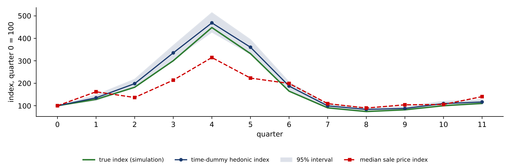